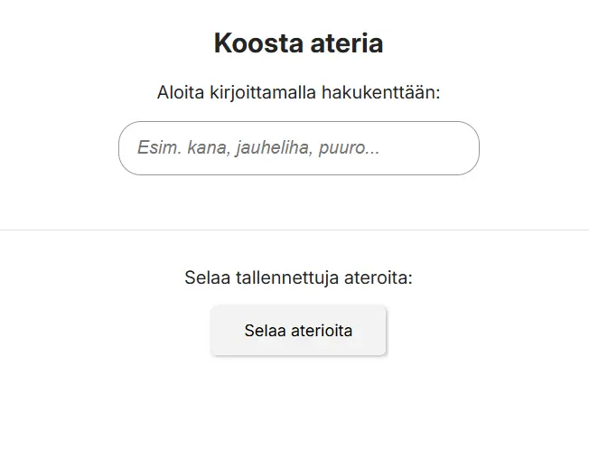

Meal Macro Builder
A simple web app for building meals and tracking nutrition in real time. I designed and built it as a solo course project.

Problem
Tracking macros is slow and complicated. Most tools have too many features for everyday use.
Goal
Build a simple meal builder that calculates nutrition in real time and saves meals for each user.
My Role
I did the UX research, UI design, and all the front end code by myself.
Outcome
A tested MVP with good Lighthouse scores. I tested the main flow with 7 people.
Table of Contents
Overview
This is a beginner level React application that I built as a personal tool. I wanted to create something I would actually use every day. At the same time, I wanted to learn how a real web application is planned, designed, and built as an MVP.
The idea of a meal macro calculator is not new. My focus was on understanding how to build one from scratch.
Test login: Email: testi@makroni.fi · Password: Makroni123
Problem and Context
Tracking macros is often slow and spread across many tools. I wanted a simple app where I can build a meal from familiar foods, change the amount in grams, and see the totals right away.
The UX challenge was to make the flow fast and clear. Users should be able to save meals and come back to them later. This was a course project at Haaga Helia University of Applied Sciences for the cloud services web development module.
Research and Insights
Before building anything, I looked at existing macro tracking tools. I found common problems: features hidden behind sign up steps, complicated food databases, and too many steps just to log one meal.
- Users want to see changes immediately when they adjust portion sizes
- Moving between building a meal and reviewing meals should be clear
- The app should work right away without a tutorial
Key insight: For a daily tool, speed and predictability are more important than having many features. Every extra step makes users want to give up.
Ideation and Decisions
I designed the MVP around one main flow: search for food items, enter grams, see nutrition totals update in real time, and save the meal. I used Nielsen heuristics to guide interface decisions. I focused on showing system status, preventing errors, and giving users control.
- Show feedback right away for important actions
- Use the same patterns on every page so users learn quickly
- Use readable fonts and clear contrast for basic accessibility
Design Solution
The UI is simple on purpose. Users can understand the app without a tutorial or onboarding. The app is built with React and Vite. Firebase Authentication handles login, and Firestore stores user data.
- React components for the meal builder and saved meals views
- Real time calculation when users change input values
- Firestore storage that keeps each user's data separate
- Clear separation between building a meal and viewing saved meals
- Same navigation and layout on every page
Validation and Iteration
I tested the app with seven people aged 25 to 55. All testers said the idea and navigation were clear. They could move between pages without extra help.
- Found two mobile scaling issues on specific devices and fixed them with CSS changes
- Fixed iOS Safari auto zoom on inputs by making the font size at least 16px
- Tested responsiveness with Chrome DevTools at different screen sizes
- Tested on Chrome, Edge, and iOS Safari
Iteration highlight: Two testers had trouble with input fields on smaller phones. Making the font size 16px fixed the iOS Safari zoom problem and improved usability on all mobile devices.
Results and Learnings
Lighthouse testing showed good performance and accessibility scores for an MVP. The app ran smoothly during typical use without visible slowdowns.
- All 7 testers understood the main flow without instructions
- Fixed mobile scaling issues on two devices with CSS improvements
- Confirmed correct behavior on Chrome and Edge
- Lighthouse scores were strong for both performance and accessibility
Future improvements include planning meals by day, a history view, more UI improvements, and possibly connecting to a REST API.